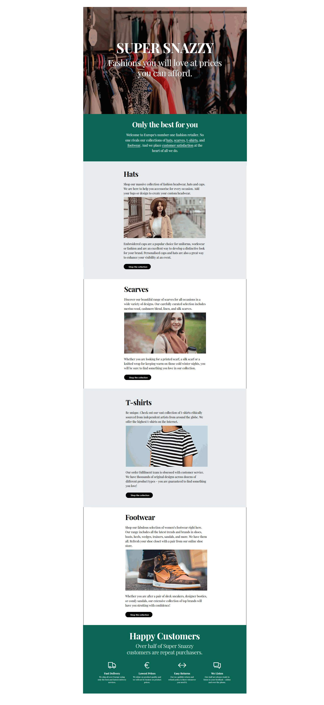
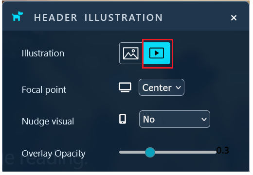
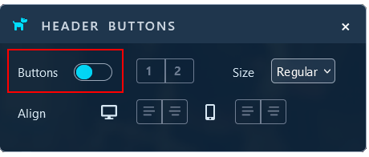
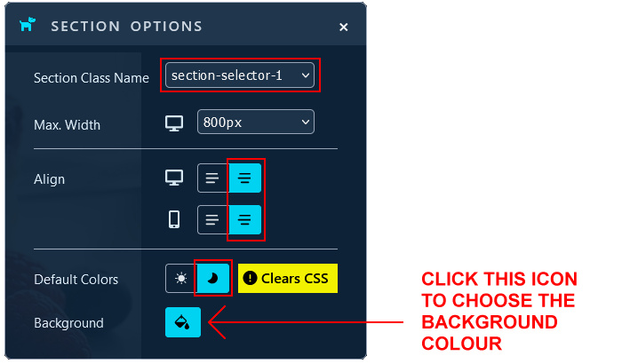
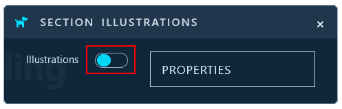
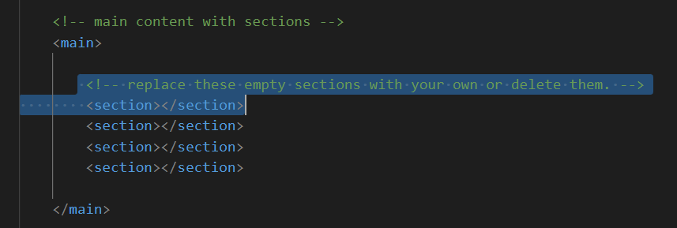
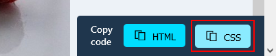
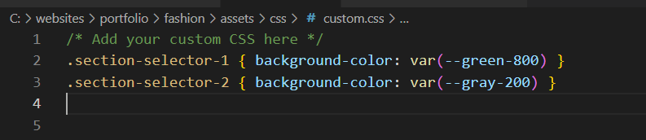
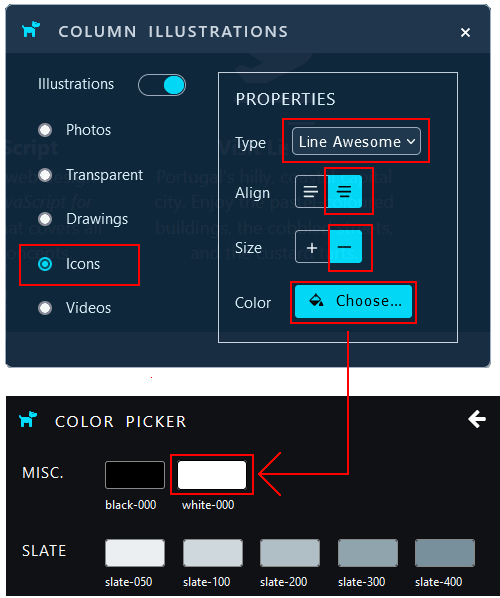

Introduction
Below you can see a screenshot of the single-page website you will create.
- In the <header> or hero block is a background video playing in a continuous loop.
- In the <main> part are six blocks of content. Each is inside a <section> tag.
- Four of these blocks contain the four products types - hats, scarves, t-shirts and footwear - offered by the online fashion store.
- Two product types - hats and t-shirts - have a light-grey coloured background (.section-selector-2).
- And the other two have a white-coloured background (.section-selector-3) background.
- The first (.section-selector-1) and last (.section-selector-4) of the six blocks both contain white text against a dark green background.
- The first five <section> blocks within the <main> part of the web page have a single-column layout. The last has a four-column layout.
- All text on the web page is in the Playfair Display font from Google Fonts.
Project folders and files
Your first task is to create the folders you need for this project.
- If a sub-folder named 📁 portfolio does not already exist inside your ‘main’ 📁 websites folder, create it now.

- Inside this 📁 portfolio folder, create a sub-folder to hold the files for your Fashion project. Name the new sub-folder as 📁 fashion (all small letters).
- Inside this new folder, create an 📁 assets sub-folder.
And inside this, create a 📁 CSS sub-folder, an 📁 img sub-folder, and a 📁 videos sub-folder.

✅ All done. You now have created the folder with sub-folders for your Fashion web page project.
Project resources
Your next task is to obtain the various files needed for your Fashion project.
Web page
Save the following 'starter' web page to your 📁 fashion folder with the file name of index.html:
Ensure the Save as type: dropdown list is set to Webpage, HTML only (*.HTML, *.htm).

Stylesheet
Save the following stylesheet file to your 📁 fashion/assets/css sub-folder:
Your folders and two files (one web page and one stylesheet) should now look as shown below.

Project text
All the text you need for this web page is in the file below. Only <p> tags have been used for basic formatting.
You do not need to download this file. You can simply copy-and-paste from it.
Project images
Download the following four images to your 📁 fashion/assets/img sub-folder.


Project video and poster image
Download the following video file and poster image to your 📁 fashion/assets/videos sub-folder.


✅ That's it. You now have all the resources you need to begin working on your Fashion project.
Launching the Lunevedy app and VS Code
Click the link below to open the Lunevedy app in a new tab of your web browser.

Next, start VS Code and open the two files below.
- fashion/index.html
- fashion/assets/css/custom.css


You are now ready to build the various content blocks of your web page.
Creating the hero block layout
You will begin by creating the 'hero block' that goes at the top of your web page.
Working with the hero block in the Lunevedy app
In the Lunevedy app, choose the Hero Block 3 option.

Your screen should look as shown below.

Choose the Illustrations menu.
In the dialog box displayed, from the Illustration options, select the Video icon.
Next, choose the Buttons menu.

In the dialog box displayed, set the Buttons option to Off.
When finished, click the HTML button near the bottom-right of the Lunevedy screen.

Because you have not updated any of the default colours in the 'hero block', the CSS button at the bottom-right of the screen is not enabled.
You have finished copying from this Lunevedy screen. So it's OK to exit or reload it.
Working with the hero block in VS Code
In VS Code, display the index.html web page.
Select the opening and closing <nav> and <header> tag pairs.

Now, paste in the copied HTML from the Lunevedy app.
Your VS Code screen should now look as shown below.

Update the hero block with the image file hero-still.jpg and video file hero-video.mp4 from the assets/videos sub-folder, and the words from the text.html file.
Your VS Code screen should now look as shown below.

Save your index.html file. Display it in your web browser. It should look as shown below.

To speed up the loading of the hero-still.jpg poster image for the background video, copy-and-paste the following code just after the "Preload large image" comment line in the <head>.
<link rel="preload" href="assets/videos/hero-still.jpg" as="image">
The final code should look as shown below.

✅ Excellent. You have now completed the hero block of your Fashion web page.
Creating the deckhead layout
As a web page designer, you do not want to show visitors too much information too soon. So it's a good idea to place a short block of introductory text under the <header> 'hero block' before you list your products or services in detail.
In the US, this short introduction is called a 'deckhead'. In the UK, it's known as a 'standfirst'.
The 'deckhead' will be the first <section> block after the opening <main> tag.
Working with the deckead in Lunevedy
On the Lunevedy home page, choose the Single Column layout.

On the next Lunevedy screen displayed, choose the Section menu option.

In the dialog box displayed, leave the Section Class Name at its default value of section-selector-1.
Set the Align option for desktops and mobiles to Center.
For Default Colors, choose the Dark option.
Next, click Background colour icon to display a slide-out list of colours at the left of the Lunevedy screen.

Select the green-800 colour for your background.
You can now close the Section menu.
Select the Illustrations menu.

In the dialog box displayed, set the Illustrations option to Off.
Finally, select the Text menu.
In the dialog box, increase the font size of the paragraph text for both desktop and mobile screens by clicking the two Up Arrow icons.

This increases the font-size of the text in the first of the three sample text paragraphs. See below.

You are now ready to copy the HTML from Lunevedy to VS Code.
Click the HTML button near the bottom-right of the screen.

Do not reload or exit the Lunevedy page. You still need to copy the CSS styles from this page.
Working with the deckhead in VS Code
In VS Code, display your index.html web page.
Just after the opening <main> tag, select the lines shown below.
Paste in the copied HTML from Lunevedy.
Delete everything from this text except the <h2> sub-heading and the first text paragraph as shown below.

Update the text with the words from the text.html file.

Save your index.html page.
Copying the deckhead CSS from Lunevedy to VS Code
Return to the Lunevedy app and, at the bottom-right of the screen, click the CSS button.

You are now finished copying from the Lunevedy screen. So it's OK to exit this screen or reload it.
In VS Code, display your custom.css stylesheet file, and paste in the CSS from the Lunevedy app. Your stylesheet should now look as follows.

Save your custom.css file.
In your web browser, your deckhead should look similar to the following.

✅ You have now completed the introductory 'deckhead' or 'standfirst' block of your Fashion web page.
Creating the <main> content layout
Your next task is to create the four <section> blocks to hold your four types of fashion products - hats, scarves, t-shirts and footwear.
In design terms, you will use two styles - one for hats and shirts, and a second style for scarves and footwear.
- Hats and t-shirts: These two will have a light-grey background and their styles will be set as section-selector-2.
- Scarves and footwear: These two will have a white background and their styles will be set as section-selector-3.
Working with the Hats and T-shirts blocks in Lunevedy
On the Home page of the Lunevedy app, click the Single Column option.
On the next Lunevedy screen displayed, choose the Section menu option.
In the SECTION OPTIONS dialog box, select the following options.

You can now close the Section dialog box.
Now choose the Buttons menu option.

In the SECTION BUTTONS dialog box, set Buttons to on, accept the default of 1 button, and select the Shape of Pill.

You can now close the Buttons dialog box.
Next, click the HTML button at the bottom-right of the screen.
Do not reload or exit the Lunevedy page. You still need to copy the CSS styles from this page.
Working with the Hats and T-shirts blocks in VS Code
In VS Code, display the index.html web page.
Select the lines shown below.

Paste in the copied HTML. You can remove any unnecessary line breaks or other spacing.

On the text you have just copied-and-pasted, perform the following two tasks:
- Delete the third paragraph of sample text.
- Cut-and-paste the <figure> tag, which contain the sample image, from under the <h2> sub-heading to between the paragraphs of sample text.
Your section of content should now look as shown below.

Select the section you have just worked with, including the opening <section> and closing </section> tags, and copy it. See below.

Copy-and-paste this directly under the first section as follows.

You now have two section blocks of content in your web page, each with the same class name of section-selector-2.
Save your index.html page in VS Code.
Copying the Hats and T-shirts CSS from Lunevedy to VS Code
Return to the Lunevedy app and, at the bottom-right of the screen, click the CSS button.
You are now finished copying from the Lunevedy screen. So it's OK to exit this screen or reload it.
In VS Code, display your custom.css stylesheet file, and paste in the CSS from the Lunevedy app. Your stylesheet should now look as follows.
Save your custom.css file.
You can now update the two <section> blocks with the words from the supplied text.html file, and the hats.jpg and tee-shirts.jpg images you downloaded and stored in your assets/img sub-folder.
In your web browser, your Fashion should now look similar to the following.

Working with the Scarves and Footwear blocks in Lunevedy
On the home page of the Lunevedy app, choose the Single Column layout.
On the next Lunevedy screen displayed, choose the Section menu option.
In the SECTION OPTIONS dialog box, change the Section Class Name to section-selector-3.

You can now close the Section dialog box.
Next choose the Buttons menu option.
In the SECTION BUTTONS dialog box, set Buttons to on, accept the default of 1 button, and select the Shape of Pill.
You can now close the Buttons dialog box.
Next, click the HTML button at the bottom-right of the screen.
It's OK to exit or reload the Lunevedy page. You will not need to copy any CSS styles from this page.
Working with the Scarves and Footwear blocks in VS Code
In VS Code, display the index.html web page.
Position the cursor between the first and second section blocks for the Hats and T-shirts.

Paste the HTML from the Lunevedy app. You can remove any unnecessary line breaks or other spacing.
As before, perform the following two tasks on the HTML you have just copied-and-pasted:
- Delete the third paragraph of sample text.
- Cut-and-paste the <figure> tag, which contain the sample image, from under the <h2> sub-heading to between the two sample text paragraphs.
Select the section you have just worked with, including the opening <section> and closing </section> tags, and copy it.
Scroll down to the bottom of the web page, and position the cursor to before the closing </main> tag.

Paste in the second block of content that has the section-selector-3 class.
Update the two <section> blocks with the words from the supplied text.html file, and the scarves.jpg and footwear.jpg images you downloaded and stored in your assets/img sub-folder.
Save your index.html page in VS Code.
As you can see, the only difference between the section-selector-2 and section-selector-3 sections is the background colour.
✅ Success! You have now completed the four product type blocks of your Fashion web page.
Creating the 'happy customers' layout
Lastly, you will create a four-column 'customer satisfaction' section block that will be positioned at the bottom of the web page.
Working with the 'happy customers' layout in Lunevedy
On the Home page of the Lunevedy app, click the Four columns option.

On the next Lunevedy screen displayed, choose the Section menu option.

In the SECTION OPTIONS dialog box, select the following options.

You can now close the Section dialog box.
Next choose the Columns menu option.

In the COLUMNS OPTIONS dialog box, set the Align option to centre.

You can now close the Columns dialog box.
Now choose the Illustrations menu option.

In the COLUMNS ILLUSTRATIONS dialog box, select Icons.
Also, choose a Type of Line Awesome, set Align to centre, and set the Size to small (-).
Finally, click the Color button and select white-000.
You can now close the Illustrations dialog box.
Click the HTML button near the bottom-right of the screen.
Do not reload or exit the Lunevedy page. You still need to copy the CSS styles from this page.
Working with the 'happy customers' layout in VS Code
In VS Code, display the index.html web page. Just before the closing </main> tag, paste in the copied text.
Save your index.html page.
Working with the 'happy customers' CSS
Return to the Lunevedy app. At the bottom-right of the screen, click the CSS button.
In VS Code, display the custom.css file, scroll down to the bottom, and paste in the copied style rules. Your stylesheet should now look as follows.

Save your custom.css file. In your web browser, your page should now look as shown below.

Update the 'customer satisfaction' block with the words from the text.html file.
Update the four icons from Line Awesome as follows:
- <i class="las la-truck"></i>
- <i class="las la-euro-sign"></i>
- <i class="las la-arrows-alt-h"></i>
- <i class="las la-comments"></i>
You have now completed this final content block of your Fashion web page.
You can delete the <footer> and <script> elements at the bottom of the web page. They are not required for this project.

Adding the final touches
In the <head> of your web page, remove the links to the Font Awesome icons.

Update the title and description as follows:
Finally, add the Google Font of 'Playfair Display' as the global font for the web page. Select just two versions of the font: Regular 400 and Bold 700.
Add the font code to the <head> of the web page in the usual way.

And then add this line to the top of the custom.css stylesheet.

Save your index.html and custom.css stylesheet.
✅ Excellent. You have now completed your Fashion project web page.
Uploading your portfolio folder to GitHub
After finishing your fashion project, you are now ready to upload it to your account on GitHub.
- Open a new tab in your web browser and go to GitHub.com. If you are not already signed in to your GitHub account, sign in now.

- On your GitHub home page, click the ‘repo’ that holds your web pages. Its name will look as follows, where username is your chosen username on GitHub.
username.github.io

- On the next GitHub screen displayed, click the portfolio folder.
- With your portfolio folder displayed on GitHub, click Add file button.

- From the dropdown list displayed, choose the option Upload files.

- In File Explorer (Windows) or Finder (Apple Mac), drag-and-drop your entire 📁 portfolio folder to upload it within your repository on GitHub.

- Scroll down to the bottom of the GitHub screen, and accept or edit the short message (Add files via upload) in the Commit changes box.
- Finally, click the green Commit changes button to upload your files.

Your portfolio project web page is now published on GitHub at a web address similar to the following:
https://username.github.io/portfolio/fashion/index.html
or simply:
https://username.github.io/portfolio/fashion
It may take a few minutes for your uploaded files to appear on GitHub.